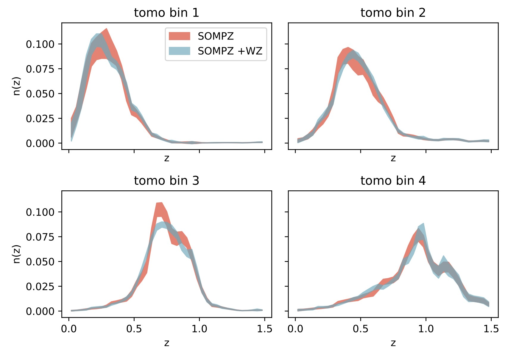

Research
I work on cosmology with large galaxy surveys, focusing on how we turn imaging data into reliable measurements of the Universe. Much of my work is within the Dark Energy Survey (DES), where I develop and validate methods that make lensing and distance estimates robust to observational effects. I contributed extensively to both DES Year 3 (published in 2022) and the final DES Year 6 analysis (published in 2026).

Weak Lensing
Weak lensing uses tiny, coherent distortions in galaxy shapes to learn how matter, including dark matter, is distributed across the Universe. Because the effect is subtle, the key is careful measurement and extensive validation.
In DES, I worked on building and testing weak-lensing analyses so that the final results are stable against observational uncertainties and suitable for cosmology.

Galaxy–Galaxy Lensing
Galaxy–galaxy lensing connects foreground galaxies to the matter around them by measuring how they distort background galaxies. It is a direct way to link visible galaxies to the underlying dark matter distribution.
For DES Year 6, I led the measurement and validation work for the galaxy–galaxy lensing signal across multiple samples and redshift bins.

Photometric Redshift Calibration

In large imaging surveys we estimate galaxy distances from their colours. To use these data for precision cosmology, we need accurate distance distributions and realistic uncertainties.
My work develops and validates calibration methods that combine information from deep fields and from galaxy clustering. In DES, I led SOM-based calibration work (SOMPZ) for lens samples and co-led clustering-based calibration (wz) for source samples.
SOMPZ
A deep-field, SOM-based approach that groups similar galaxies and uses deeper data to infer their distance distribution, with uncertainties propagated to the final analysis.
Clustering redshifts (wz)
A complementary approach that uses how galaxies cluster on the sky to statistically infer distance information, and helps validate and strengthen the overall calibration.